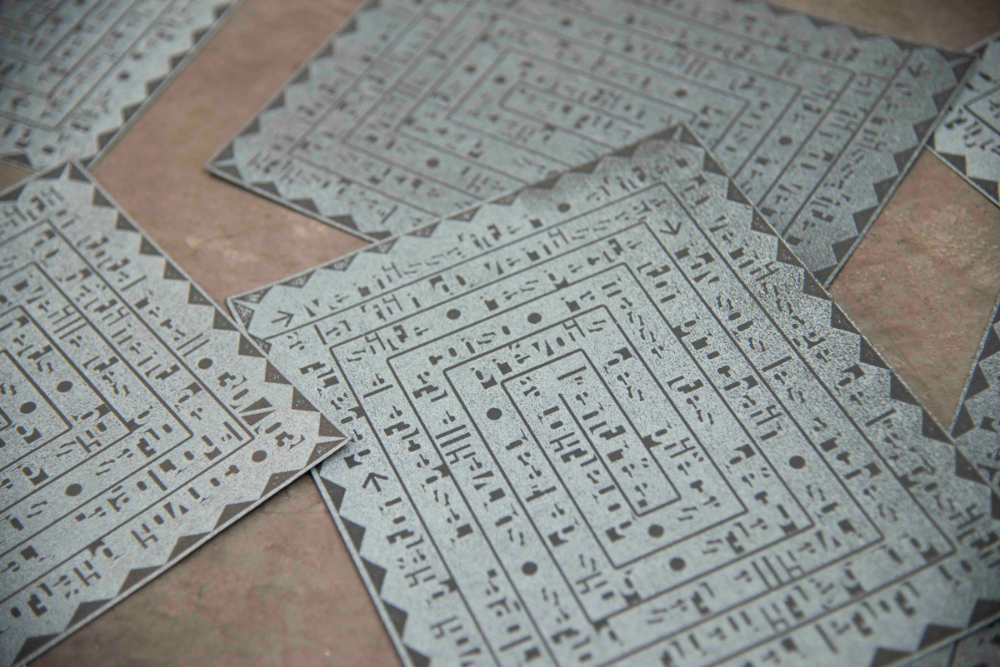
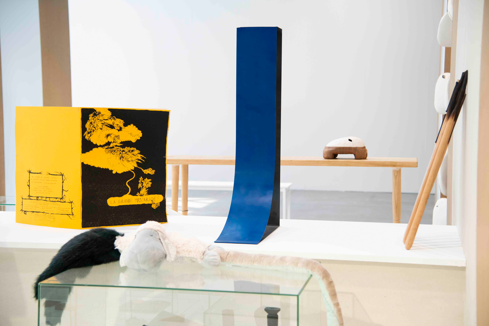
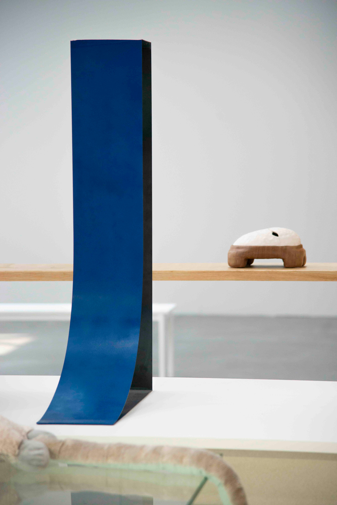
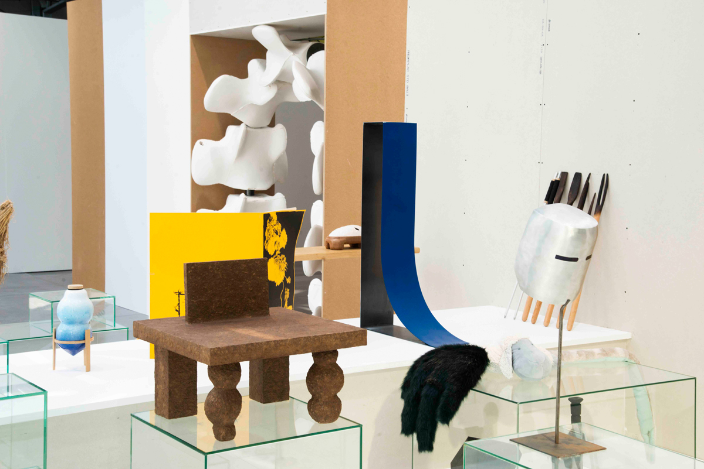

Réalisation de nouvelles pièces pour l'exposition des diplômé·e·s 2022 intitulée « Total Recall », scénographie et commissariat d'exposition par Julie Portier & Its Our Playground.
Impression d'un flyer en 50 exemplaires sur presse pour linogravure.
Flyer comprenant les différentes informations permettant d'accéder à la soirée clôturant le vernissage, le VERNISSAFTER, et réutilisant le vocabulaire graphique de → La T.E.U.F. Seconde pièce intitulée « Contre_F / T_Bas, 2022, Métal, 100 cm x 59 cm x 20 cm », réalisée pour le diplôme et exposée sur le podium de la troisième salle de l'exposition.